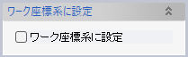
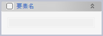
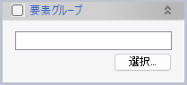

座標系（データム）
座標系（データム）
操作方法
パラメータの入力が整うと作成座標系のプレビューが表示されます。座標系の確認後、OKボタンで実行します。
パラメータ
- 座標軸定義

座標系の２軸（XY,YZ,ZX）のどの軸を定義するかを設定します。
- ワーク座標系に設定
 チェックすると、作成された座標系がワーク座標系になります。
- 関連（オプション）


座標系の定義に使用した要素の変更に追従するように関連づけます。（関連の方法）
- 要素名
 左上のチェックボックスをチェックすると、作成される座標系の要素名を指定できます。
- 要素グループ
 左上のチェックボックスをチェックすると、作成される座標系が指定した要素グループに追加されます。